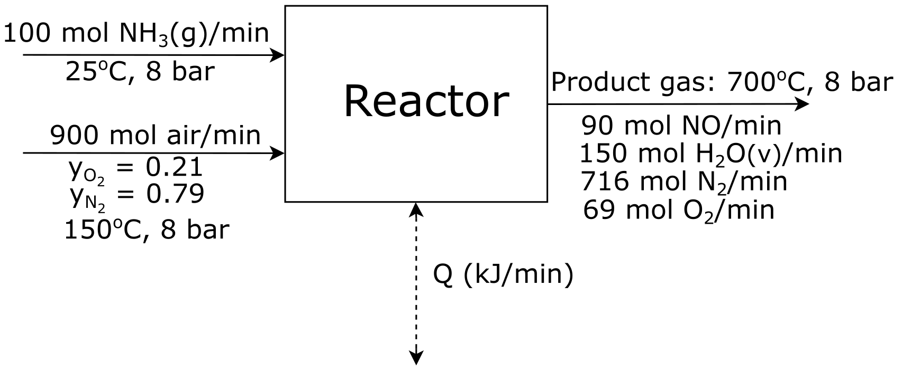
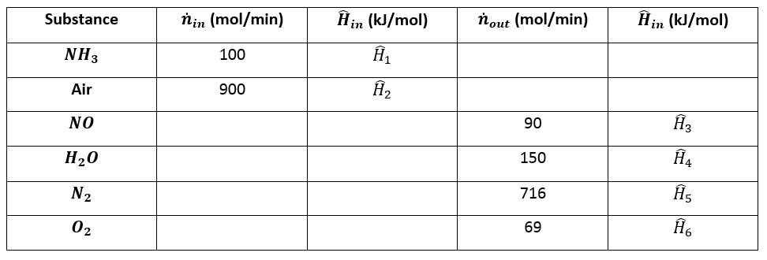
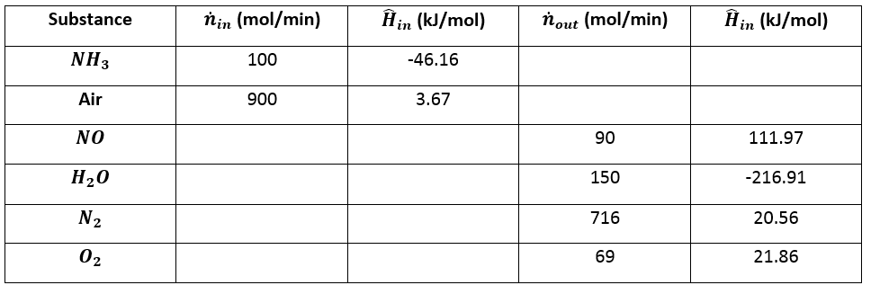

6.6 – Practice Problem 1
Nitric acid is a crucial chemical that is used in the production of
ammonium nitrate which is used for fertilizers, making plastics, and
manufacturing of dyes. To produce nitic acid, you need nitric oxide and
to produce nitric oxide you must oxidize ammonia. The two reactions that
occur during the oxidation of ammonia are:
\[4 \space N H_3 + 5 \space O_2 \longrightarrow 4 \space NO + 6 \space H_2 O\]
\[2 \space N H_3 + \frac{3}{2} \space O_2 \longrightarrow N_2 + 3 \space H_2 O\]
You are a chemical engineer in charge of this step in the process. A
flow chart shown bellow details the reactor you are working on.

Attribution: Said Zaid-Alkailani & UBC [CC BY 4.0 de
(https://creativecommons.org/licenses/by/4.0/)]
You must:
- Take the elemental species
\(\big[N_2 (g), \space H_2 (g), \space O_2 (g)\big]\) at
\(25 ^{\circ} C\) as references and prepare and fill an
inlet-outlet enthalpy table.
- Calculate the heat transfer to or from the reactor in MW.
Answer
a) Take the elemental species \(\big[N_2 (g), \space H_2 (g), \space O_2 (g)\big]\) at \(25 ^{\circ} C\) as references and prepare and fill an inlet-outlet enthalpy table.
First we must prepare the enthalpy table:

Using heat capacity and enthalpy tables found online such as on the
NIST website, we can find the enthalpies of
the inputs and outputs.
\[\hat{H}_i = \Delta \hat{H}^o_{fi} + \int^T_{25}{C_{pi} dt}\]
\(NH_3(g, \space 25^{\circ}C)\)
\[\hat{H}_1 = \Delta \hat{H}^o_{f \space NH_3} + \int^T_{25}{C_{p \space NH_3} dt} = -46.19 \space \frac{kJ}{mol} + \int^{25}_{25}{C_{p \space NH_3} dt} = \big(-46.19 + 0\big) \space \frac{kJ}{mol}\]
\[\hat{H}_1 = -46.19 \space \frac{kJ}{mol}\]
\(\text{Air}(g, \space 25^{\circ}C)\)
\[\hat{H}_2 = \Delta \hat{H}^o_{f \space \text{Air}} + \int^T_{25}{C_{p \space \text{Air}} dt} = 3.67 \space \frac{kJ}{mol} + \int^{25}_{25}{C_{p \space \text{Air}} dt} = \big(3.67 + 0\big) \space \frac{kJ}{mol}\]
\[\hat{H}_2 = 3.67 \space \frac{kJ}{mol}\]
\(NO(g, \space 700^{\circ}C)\)
\[\hat{H}_3 = \Delta \hat{H}^o_{f \space NO} + \int^T_{25}{C_{p \space NO} dt}\]
\[\hat{H}_3 = 90.37 \space \frac{kJ}{mol} + \int^{700}_{25}{\bigg[\big(2.950 \times 10^{-2} \big) + \big(8.188 \times 10^{-6} \big) T - \big(2.925 \times 10^{-9} \big) T^2 + \big(3.652 \times 10^{-13}\big) T^3 dt\bigg]} \space \frac{kJ}{mol}\]
\[\hat{H}_3 = \big(90.37 + 21.60\big) \space \frac{kJ}{mol} = 111.97 \space \frac{kJ}{mol}\]
\(H_2 O(g, \space 700^{\circ}C)\)
\[\hat{H}_4 = \Delta \hat{H}^o_{f \space H_2 O} + \int^T_{25}{C_{p \space H_2 O} dt} = \big(-241.83 + 23.92 \big) \space \frac{kJ}{mol}\]
\[\hat{H}_4 = -216.91 \space \frac{kJ}{mol}\]
\(N_2 (g, \space 700^{\circ}C)\)
\[\hat{H}_5 = \Delta \hat{H}^o_{f \space N_2} + \int^T_{25}{C_{p \space N_2} dt} = \big(0 + 20.59 \big) \space \frac{kJ}{mol}\]
\[\hat{H}_5 = 20.59 \space \frac{kJ}{mol}\]
\(O_2 (g, \space 700^{\circ}C)\)
\[\hat{H}_6 = \Delta \hat{H}^o_{f \space O_2} + \int^T_{25}{C_{p \space O_2} dt} = \big(0 + 21.86 \big) \space \frac{kJ}{mol}\]
\[\hat{H}_6 = 21.86 \space \frac{kJ}{mol}\]
Now we can complete the table.

b) Calculate the heat transfer to or from the reactor in MW.
The heat transferred to or from the reactor will just be the change in
enthalpy of the inlets vs. the outlets. Units are excluded during
calculations.
\[\dot{Q} = \Delta\dot{H} = \sum_{out}\dot{n}_i\hat{H}i - \sum_{in}\dot{n}_i\hat{H}i\]
\[\dot{Q} = \bigg[\big(90 \cdot 111.97 \big) + \big(150 \cdot -216.91 \big) + \big(716 \cdot 20.59 \big) + \big(69 \cdot 21.86 \big)\bigg] - \bigg[\big(100 \cdot -46.19 \big) + \big(900 \cdot 3.67 \big)\bigg]\]
\[\dot{Q} = -4890 \space \frac{kJ}{min}\]
Now we must convert to the proper units.
\[\dot{Q} = -4890 \space \frac{kJ}{min} \times \frac{1 \space min}{60 \space s} \times \frac{1 \space MJ}{1000 \space kJ} = -0.0815 \space MW\]